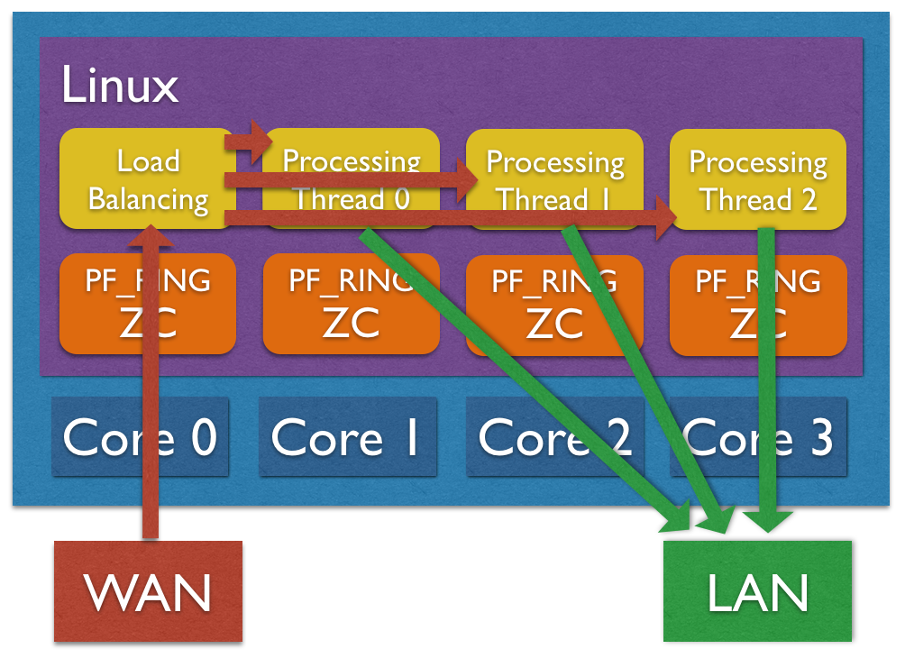

Производительность и настройка
В этом разделе рассматриваются несколько ключевых аспектов запуска приложения на линейной скорости.
Конфигурация оборудования
Прежде всего вам следует выяснить, какова фактическая конфигурация оборудования. Пожалуйста, убедитесь, что:
Память установлена правильно.
Пожалуйста, проверьте на ark.intel.com количество каналов памяти, поддерживаемых вашим CPU, и убедитесь, что для каждого канала установлен модуль памяти. Если у вас нет физического доступа к машине или вы просто хотите еще раз проверить, все ли правильно настроено, вы можете использовать dmidecode. В приведенном ниже примере машина имеет 4 канала памяти, и для каждого канала установлен модуль памяти.
dmidecode | grep "Configured Clock Speed"
Configured Clock Speed: 1600 MHz
Configured Clock Speed: 1600 MHz
Configured Clock Speed: 1600 MHz
Configured Clock Speed: 1600 MHz
NICs установлены правильно.
Убедитесь, что используемые вами карты установлены в слоты PCIe с достаточным количеством линий и скоростью для поддержки ожидаемой пропускной способности. Вы можете проверить это с помощью dmesg или выполнить некоторые математические вычисления, используя скорость PCIe в зависимости от версии и количества линий, указанных на материнской плате.
dmesg | grep Speed
[ 3.075885] ixgbe 0000:01:00.0: (Speed:5.0GT/s, Width: x8, Encoding Loss:20%)
[ 3.314675] ixgbe 0000:01:00.1: (Speed:5.0GT/s, Width: x8, Encoding Loss:20%)
В случае систем NUMA (т. е. с несколькими процессорами) убедитесь, что карта установлена в правильный слот PCIe и напрямую подключена к CPU, который вы собираетесь использовать для обработки трафика. Для этого вы можете использовать lstopo. В приведенном ниже примере есть 2 NICs, один установлен на узле NUMA 0 (eth0 и eth1), а другой установлен на узле NUMA 1 (eth1 и eth2).
lstopo
Machine (63GB)
NUMANode L#0 (P#0 31GB)
Socket L#0 + L3 L#0 (20MB)
L2 L#0 (256KB) + L1d L#0 (32KB) + L1i L#0 (32KB) + Core L#0
PU L#0 (P#0)
PU L#1 (P#16)
L2 L#1 (256KB) + L1d L#1 (32KB) + L1i L#1 (32KB) + Core L#1
PU L#2 (P#2)
PU L#3 (P#18)
L2 L#2 (256KB) + L1d L#2 (32KB) + L1i L#2 (32KB) + Core L#2
PU L#4 (P#4)
PU L#5 (P#20)
L2 L#3 (256KB) + L1d L#3 (32KB) + L1i L#3 (32KB) + Core L#3
PU L#6 (P#6)
PU L#7 (P#22)
L2 L#4 (256KB) + L1d L#4 (32KB) + L1i L#4 (32KB) + Core L#4
PU L#8 (P#8)
PU L#9 (P#24)
L2 L#5 (256KB) + L1d L#5 (32KB) + L1i L#5 (32KB) + Core L#5
PU L#10 (P#10)
PU L#11 (P#26)
L2 L#6 (256KB) + L1d L#6 (32KB) + L1i L#6 (32KB) + Core L#6
PU L#12 (P#12)
PU L#13 (P#28)
L2 L#7 (256KB) + L1d L#7 (32KB) + L1i L#7 (32KB) + Core L#7
PU L#14 (P#14)
PU L#15 (P#30)
HostBridge L#0
PCIBridge
PCI 8086:154d
Net L#1 "eth0"
PCI 8086:154d
Net L#2 "eth1"
NUMANode L#1 (P#1 31GB)
Socket L#1 + L3 L#1 (20MB)
L2 L#8 (256KB) + L1d L#8 (32KB) + L1i L#8 (32KB) + Core L#8
PU L#16 (P#1)
PU L#17 (P#17)
L2 L#9 (256KB) + L1d L#9 (32KB) + L1i L#9 (32KB) + Core L#9
PU L#18 (P#3)
PU L#19 (P#19)
L2 L#10 (256KB) + L1d L#10 (32KB) + L1i L#10 (32KB) + Core L#10
PU L#20 (P#5)
PU L#21 (P#21)
L2 L#11 (256KB) + L1d L#11 (32KB) + L1i L#11 (32KB) + Core L#11
PU L#22 (P#7)
PU L#23 (P#23)
L2 L#12 (256KB) + L1d L#12 (32KB) + L1i L#12 (32KB) + Core L#12
PU L#24 (P#9)
PU L#25 (P#25)
L2 L#13 (256KB) + L1d L#13 (32KB) + L1i L#13 (32KB) + Core L#13
PU L#26 (P#11)
PU L#27 (P#27)
L2 L#14 (256KB) + L1d L#14 (32KB) + L1i L#14 (32KB) + Core L#14
PU L#28 (P#13)
PU L#29 (P#29)
L2 L#15 (256KB) + L1d L#15 (32KB) + L1i L#15 (32KB) + Core L#15
PU L#30 (P#15)
PU L#31 (P#31)
HostBridge L#8
PCIBridge
PCI 8086:154d
Net L#7 "eth2"
PCI 8086:154d
Net L#8 "eth3"
В случае системы NUMA важно сообщить драйверу, какой номер CPU мы собираемся использовать для обработки пакетов для каждого сетевого интерфейса, чтобы настроить ресурсы в нужном месте памяти и улучшить локальность памяти. Для этого обратитесь к разделу «Установка — PF_RING», где мы настроили драйвер, используя:
echo "RSS=0,0" > /etc/pf_ring/zc/ixgbe/ixgbe.conf
Чтобы указать сходство CPU, можно использовать параметр numa_cpu_affinity, передавая идентификаторы ядра для выделения памяти, по одному на каждый интерфейс (в этом примере 4 интерфейса):
echo "RSS=0,0,0,0 numa_cpu_affinity=0,0,8,8” > /etc/pf_ring/zc/ixgbe/ixgbe.conf
Где 0 — это идентификатор ядра на первом CPU, 8 — это идентификатор ядра на втором CPU.
Не забудьте перезагрузить PF_RING с помощью сценария init.d после изменения конфигурации.
Балансировка нагрузки
Балансировка нагрузки важна для распределения рабочей нагрузки между несколькими ядрами CPU. Приложение поддерживает распределение трафика с помощью аппаратной поддержки RSS или с помощью программного распределения zero-копий на базе ZC.
Распределение аппаратного трафика (RSS)
По умолчанию приложение ожидает, что RSS настроен, создавая столько потоков обработки, сколько имеется очередей RSS. В разделе Установка - PF_RING мы настроили драйвер на «автоматический» режим RSS (столько очередей RSS, сколько ядер CPU), используя:
echo "RSS=0,0" > /etc/pf_ring/zc/ixgbe/ixgbe.conf
Также можно указать количество очередей, передав количество очередей на интерфейс (в данном примере 2 интерфейса, 4 очереди на интерфейс) в параметр RSS:
echo "RSS=4,4" > /etc/pf_ring/zc/ixgbe/ixgbe.conf
Не забудьте перезагрузить PF_RING с помощью сценария init.d после изменения конфигурации.
Можно проверить текущее количество очередей RSS для каждого интерфейса по информации, сообщаемой PF_RING в /proc:
cat /proc/net/pf_ring/dev/eth1/info | grep Queues
Max # TX Queues: 4
# Used RX Queues: 4

Программное распределение трафика (ZC)
Другой вариант распределения трафика по ядрам — использование zero-копирования программного распределения на основе ZC. Этот режим обеспечивает большую гибкость в распределении трафика, поскольку хэш вычисляется программно и может применяться к любому заголовку пакета или полезной нагрузке. Обратите внимание, что RSS по-прежнему необходим для передачи zero-копий без блокировки, как показано на рисунке ниже. Чтобы включить распространение программного обеспечения, в файле конфигурации nscrub необходимо указать опцию –sw-distribution|-w.

CPU Родство
Сходство CPU очень важно для равномерного распределения нагрузки по ядрам. Существует несколько вариантов установки привязки ядра для каждого потока, используемого приложением.
Поток источника времени
Чтобы иметь точный недорогой источник времени, используется выделенный поток. Можно привязать этот поток к ядру, используя команду --time-source-affinity|-T вариант.
Обработка потоков
Используя поддержку балансировки нагрузки, как аппаратного RSS, так и программного обеспечения, поток обработки создается для каждой очереди RSS. Можно привязать каждый поток к ядру, перечислив идентификаторы ядер в файле конфигурации nscrub с помощью опции –thread-affinity|-g (список, разделенный двоеточиями). Пример (4 очереди RSS):
cat /etc/nscrub/nscrub.conf
--wan-interface=zc:eth1
--lan-interface=zc:eth2
--time-source-affinity=0
--thread-affinity=1:2:3:4
--log-path=/var/tmp/nscrub.log
--pid-path=/var/tmp/nscrub.pid
--daemon
Поток балансировщика нагрузки (только для распределения трафика программного обеспечения)
Используя программное распространение (–sw-distribution|-w) вместо hw RSS, дополнительный поток балансировщика используется для вычисления хэш-пакета и направления пакета в правильный поток обработки. Для этого потока можно установить привязку ядра с помощью опции –balancer-affinity|-r. Пример:
cat /etc/nscrub/nscrub.conf
--wan-interface=zc:eth1
--lan-interface=zc:eth2
--time-source-affinity=0
--balancer-affinity=1
--thread-affinity=2:3:4:5
--log-path=/var/tmp/nscrub.log
--pid-path=/var/tmp/nscrub.pid
--daemon
Zero — Копирование передачи и разгрузка передачи.
Пересылка пакетов в nscrub требует, чтобы пакет был получен, обработан и передан. На Intel интерфейсах ZC передача осуществляется путем замены указателя, без копирования пакета. На других адаптерах обычно используется полная копия пакета, что приводит к снижению производительности.
Вместо этого адаптеры Napatech поддерживают передачу с копированием zero, это означает, что полученные пакеты можно пересылать. аппаратно, разгружая копию пакета, путем установки специального флага в дескрипторе полученного пакета. Эту поддержку следует включить при настройке адаптера с помощью инструмента ntpl, и ее можно комбинировать. с потоками для распределения нагрузки на несколько ядер.
Ниже приведен пример сценария, который можно использовать для настройки 4 потоков на порту 0 и 4 потоков на порту 0. порт 1 и пересылать трафик из потоков приема на противоположный порт с помощью флага дескриптора.
#!/bin/bash
/opt/napatech3/bin/ntpl -e "Delete=All"
/opt/napatech3/bin/ntpl -e "HashMode[Priority = 0; Layer4Type=TCP,UDP,SCTP] = Hash5TupleSorted"
/opt/napatech3/bin/ntpl -e "HashMode[Priority = 1; Layer3Type=IP] = Hash2TupleSorted"
/opt/napatech3/bin/ntpl -e "Setup[NUMANode=0] = StreamId==(0..7)"
/opt/napatech3/bin/ntpl -e "Setup[TxDescriptor = Dyn; TxPorts = 1; TxIgnorePos = 42] = StreamId == (0..3)"
/opt/napatech3/bin/ntpl -e "Setup[TxDescriptor = Dyn; TxPorts = 0; TxIgnorePos = 42] = StreamId == (4..7)"
/opt/napatech3/bin/ntpl -e "Assign[StreamId = (0..3); Descriptor=Dyn3] = Port == 0"
/opt/napatech3/bin/ntpl -e "Assign[StreamId = (4..7); Descriptor=Dyn3] = Port == 1"
Чтобы включить разгрузку TX в nScrub, --tx-offload опция доступна. В приведенном ниже примере
файл конфигурации, nScrub настроен на создание 4 потоков захвата, по одному на каждый поток, и пересылку трафика.
с использованием разгрузки TX.
--lan-interface=nt:stream0,nt:stream1,nt:stream2,nt:stream3
--lan-tx-interface=nt:1,nt:1,nt:1,nt:1
--wan-interface=nt:stream4,nt:stream5,nt:stream6,nt:stream7
--wan-tx-interface=nt:0,nt:0,nt:0,nt:0
--tx-offload